sqldoc
Banquet in practice
Everything sqldoc shows you has an address. Learn to read and write it, and any view of any SQLite file is one line away.
→ next · ← back · F full screen · Esc overview · S speaker notes
Banquet URL Syntax
A Banquet URL is a file path that keeps going: file, table, columns, rows.
Separate file, table and column with semicolons when a path is ambiguous.
testdata/sample.db;telemetry;device_id
dataset;table;column with semicolons is parsed without guessing.
[url-1] dataset;table;column with semicolons is parsed without guessing.
Type a path the way you would in Finder: file, then table, then columns.
testdata/sample.db/telemetry/device_id,temperature
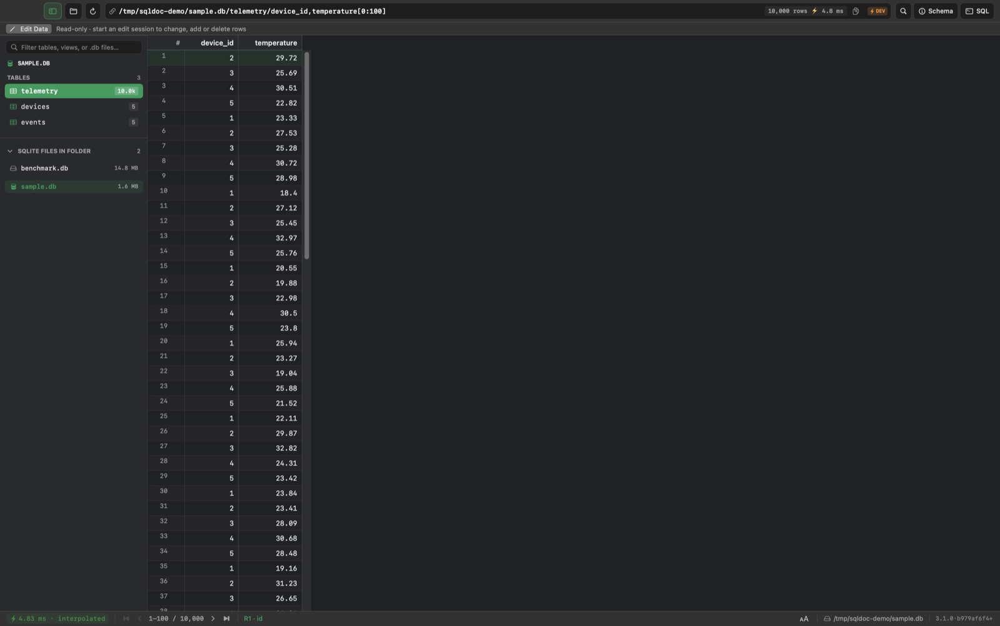
A path, a table and two columns: nothing else to learn. A Banquet URL reads like a file path. File, table, columns. [url-2] dataset/table/column with slashes; the dataset ends at the segment with a known file extension.
Name just the table to see every column.
testdata/sample.db/telemetry
No columns means SELECT *; a one-table file may omit the table name.
[url-3] No columns means SELECT *; a one-table file may omit the table name.
Add [0:100] to see the first hundred rows.
testdata/sample.db/telemetry[0:100]
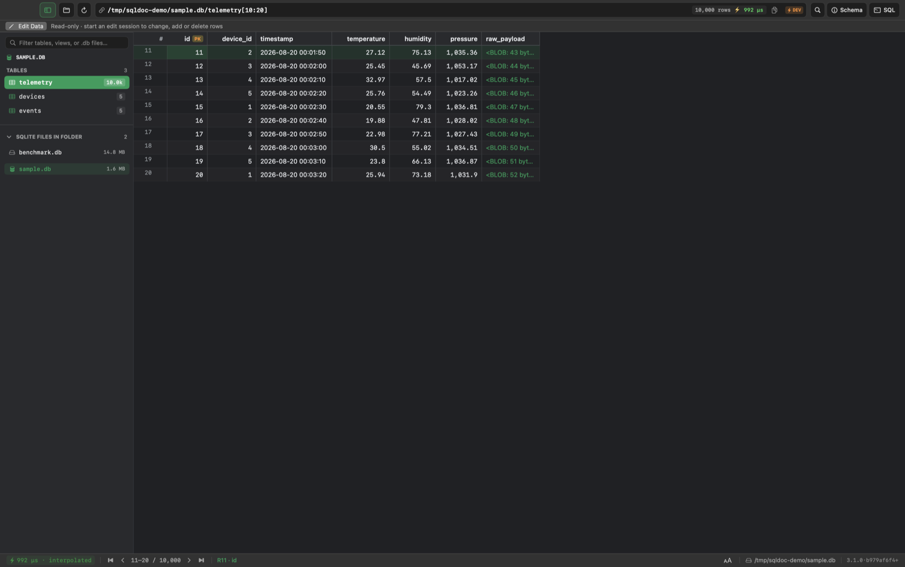
Python-style slice: rows 10 to 20. Square brackets pick the rows, the way a Python slice does. [url-4] [start:end] in the path becomes OFFSET start, LIMIT end-start.
Put a minus in front of a column name to sort by it, largest first.
testdata/sample.db/telemetry/-temperature[0:100]
A minus sign sorts descending. Put a minus in front of a column and the table sorts by it, largest first. [url-5] +col sorts ascending, -col descending; orderby= does the same in the query string.
Write status!=active after the table to leave those rows out.
testdata/sample.db/devices/status!=active
Column!=Value in a path segment becomes a WHERE condition; where= carries complex filters.
[url-6] Column!=Value in a path segment becomes a WHERE condition; where= carries complex filters.
Type ?id>6000 after the table to filter without writing where=.
testdata/sample.db/telemetry?id>6000
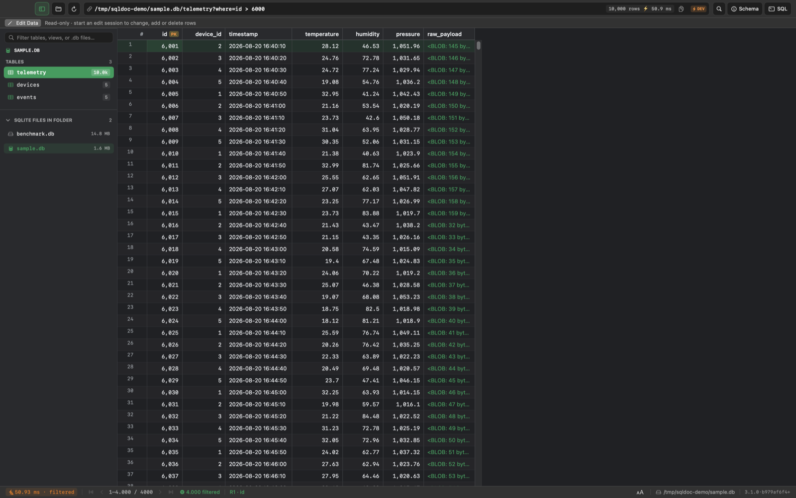
Anything after ? is a filter. Add a question mark and a condition. No where keyword needed. [url-6q] Any non-reserved ?parameter with a comparison operator is a WHERE condition; several are ANDed.
Type a folder path to list every database in it.
testdata/
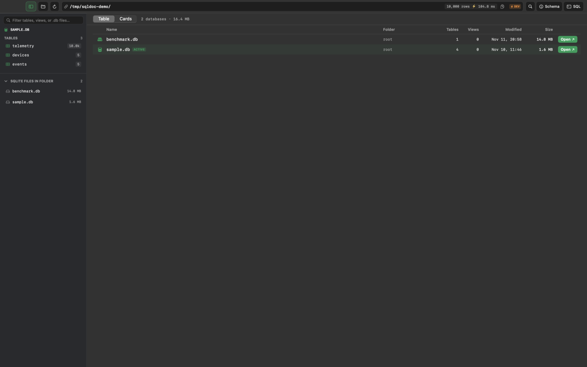
A folder is a URL too: every database under it. Point it at a folder and you get a catalog of every database inside. [url-7] A path with no recognised extension names a container; the host answers with a catalog of the datasets under it.
Banquet Bar Style
The bar at the top is the only control you need. Whatever you see has a URL.
Click the bar or press ⌘L and type.
testdata/sample.db/telemetry
The bar is an editable text field at the top of the window.
[bar-1] The bar is an editable text field at the top of the window.
Start typing as soon as the app opens.
The bar is focused on launch and after completing an action.
Differs from the standard: Focused on launch and with ⌘L. Not refocused after a submit, so the grid keeps arrow keys and ⌘F.
[bar-2] The bar is focused on launch and after completing an action.
Sort or filter in the grid and watch the bar rewrite itself; copy it to share the view.
testdata/sample.db/telemetry/-id
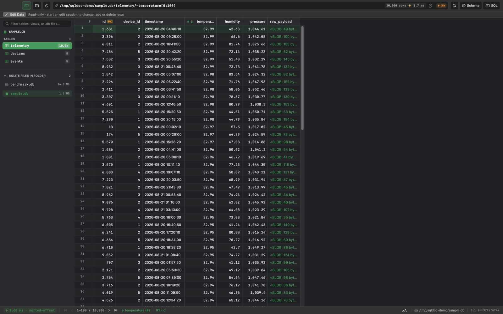
The bar rewrites itself as you click. Sort and filter with the mouse. The bar keeps up, so the view is always a link you can copy. [bar-3] The bar always shows the canonical Banquet URL of the current view.
Edit the URL and press Return.
Return evaluates the typed URL, command or relative clause and syncs the bar to the result.
[bar-4] Return evaluates the typed URL, command or relative clause and syncs the bar to the result.
Press ↑ in the bar to bring back the last URL you ran.
↑ recalls earlier evaluated URLs; ↓ walks forward and ends at the unsubmitted draft.
[bar-6] ↑ recalls earlier evaluated URLs; ↓ walks forward and ends at the unsubmitted draft.
Type the start of a table name and press Tab.
Tab completes a partial table or column name from the open schema.
[bar-7] Tab completes a partial table or column name from the open schema.
Type a few letters and pick from the list under the bar.
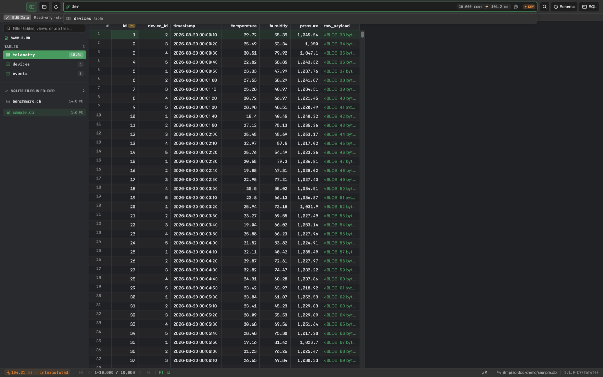
Typing "dev" offers the devices table. Start typing and the bar suggests tables, columns and places you have been. [bar-8] Typing opens a ranked dropdown of tables, columns, history and databases; ↑/↓ move, Tab completes, Return runs, Esc closes.
Press ⌘[ to go back to the previous view, ⌘] to go forward.
Differs from the standard: The behaviour is implemented; the keys are ⌘[ and ⌘] (extra A5).
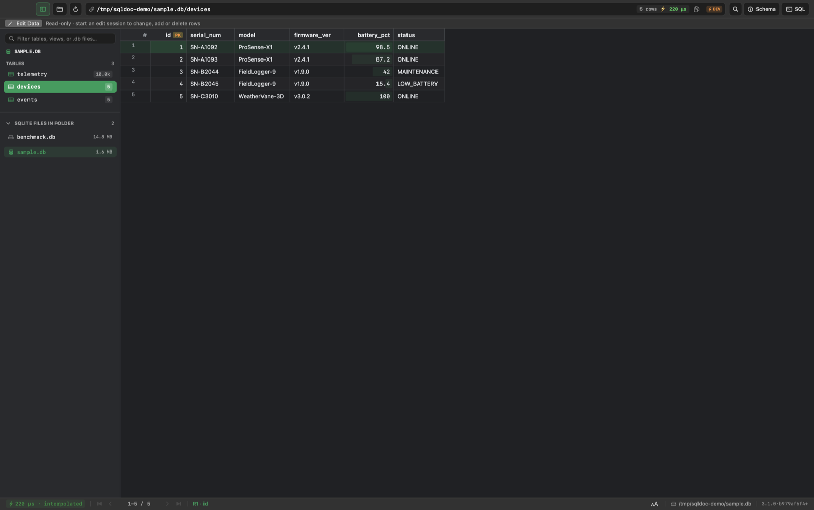
Back returns to the previous view. Back and forward work like a browser. [bar-9] Alt+← / Alt+→ (or Ctrl+[ / Ctrl+]) walk the session stack; a new visit after going back drops forward history.
Banquet Grid Style
How values are drawn once you have a result.
Long text is shortened in the grid; open the inspector to read all of it.
testdata/sample.db/events
Rows are one line high; text past about 120 characters is cut with an ellipsis and newlines become spaces.
Differs from the standard: Newlines are flattened, but the cut is at text.cell_display_max_chars = 400, not 120.
[grid-1] Rows are one line high; text past about 120 characters is cut with an ellipsis and newlines become spaces.
Binary columns show their size instead of garbage.
testdata/sample.db/telemetry/id,raw_payload[0:100]
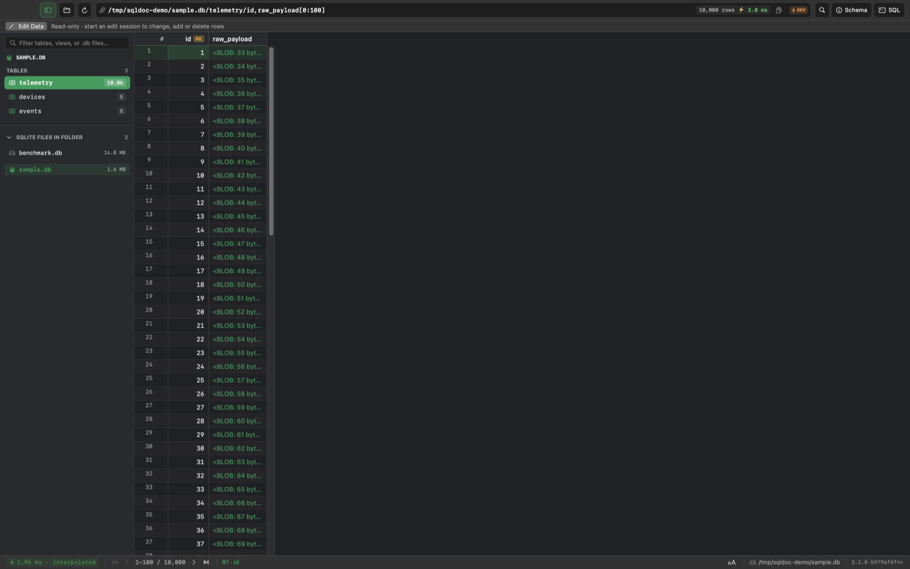
Binary data shows its size, never garbage. [grid-2] Binary values are never printed raw; they show as <BLOB: n bytes>.
Switch the display to raw to see values exactly as stored.
testdata/sample.db/telemetry
Values are formatted for reading (dates from epochs, thousands separators); the raw value stays reachable.
[grid-3a] Values are formatted for reading (dates from epochs, thousands separators); the raw value stays reachable.
Zero rows
testdata/sample.db/devices/status=NOPE
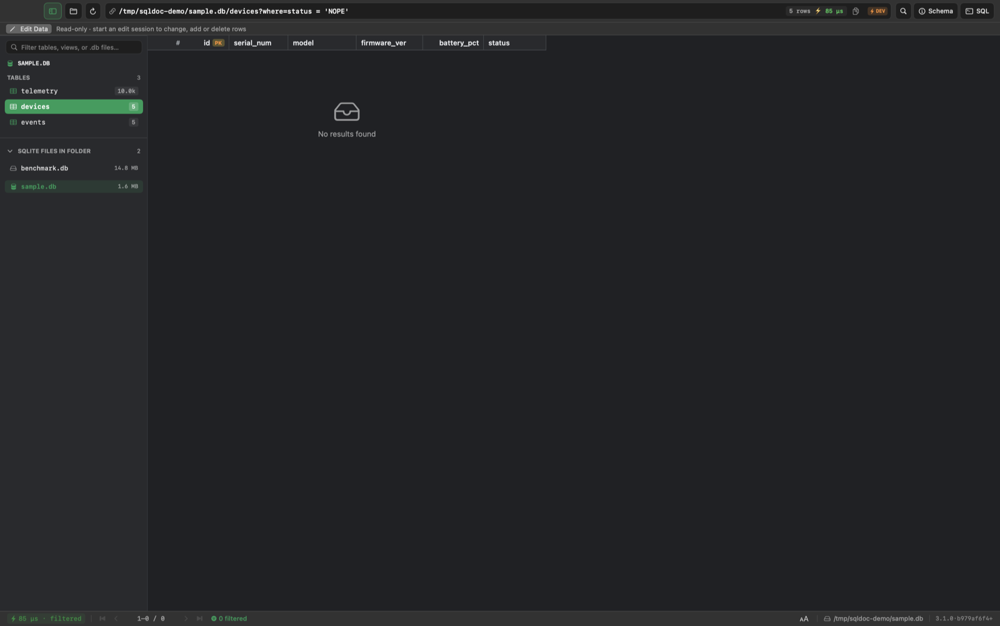
No match says so, and keeps the headers. [grid-4] An empty result shows "No results found", not a bare grid.
Banquet Query Style
Which columns you see first, and which are tucked away.
Primary key first
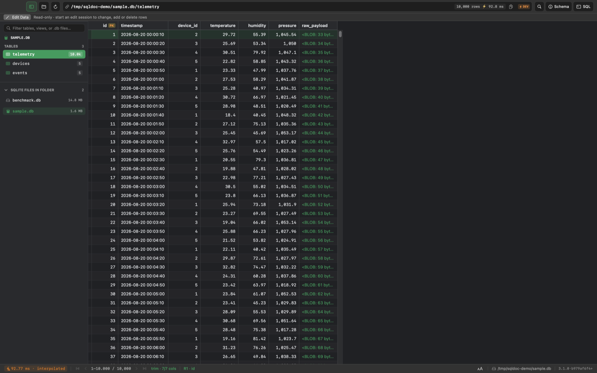
Trim: key first, noise hidden. Trim view puts the key first and hides columns you rarely need. [query-1] The primary key leads, in key order.
Wide tables open trimmed; switch to raw to see every column.
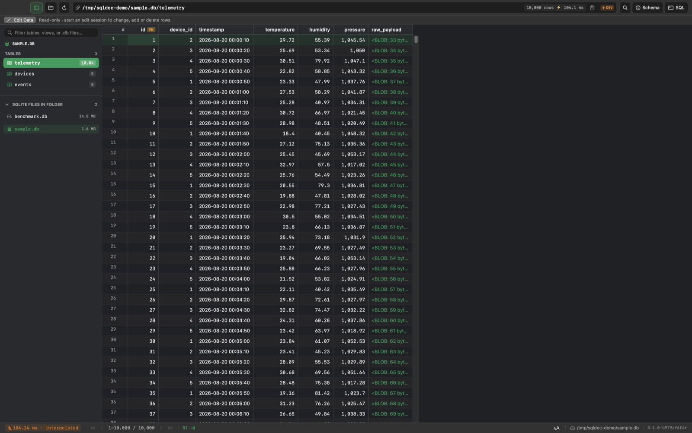
Raw: every column, as stored. [query-8] No cap normally; past about 40 surviving columns trim keeps the first 40. Raw is never capped.
Banquet Table List Style
A whole database on one page.
Type <file>/tables to see every table at once.
testdata/sample.db/tables
The table list reuses Grid Style.
[tablelist-1] The table list reuses Grid Style.
Banquet Collections & DB List Style
A folder of databases is browsable too.
Add -size_bytes after a folder path to sort its databases by size.
testdata/-size_bytes
The container runs to the first reserved catalog table (databases, tables) or clause-like segment; the rest is ordinary grammar applied to the catalog.
[dblist-grammar] The container runs to the first reserved catalog table (databases, tables) or clause-like segment; the rest is ordinary grammar applied to the catalog.
Click a database in the list to open it.
Each row opens its dataset through its open path.
Differs from the standard: Rows open the database when clicked, but there is no open column carrying a Banquet path.
[dblist-3] Each row opens its dataset through its open path.
Banquet Edit Style (sqlswift, experimental)
Files open read-only. Editing is a mode you switch on.
Press ⌥⌘E to start editing.
Files open read-only; edit mode never starts from a URL, a paste or a drop.
[edit-1] Files open read-only; edit mode never starts from a URL, a paste or a drop.
Visible state
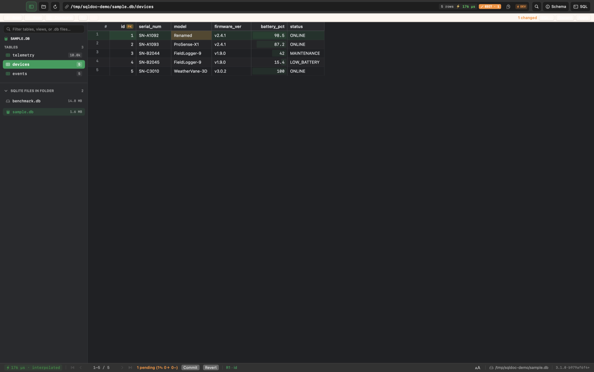
Editing is opt-in, staged, and never changes the URL. Editing is a deliberate mode. Changes are staged and tinted until you commit. [edit-3] An EDIT badge shows while editing, with the pending count when above zero.
Double-click a cell, type, press Return.
Double-click or Return opens an inline editor on the raw value; Return stages and moves down, Tab right, Esc cancels.
[edit-5] Double-click or Return opens an inline editor on the raw value; Return stages and moves down, Tab right, Esc cancels.
Press ⌘S to write your changes, or Revert to throw them away.
Commit writes everything in one transaction and rolls back whole on any failure; Revert discards the buffer.
[edit-8] Commit writes everything in one transaction and rolls back whole on any failure; Revert discards the buffer.
sqldoc
Every view is a link.
Step-by-step version: the guide .